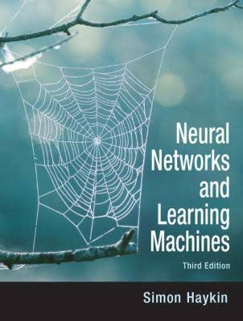
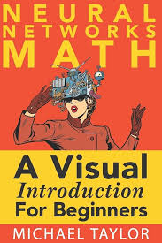
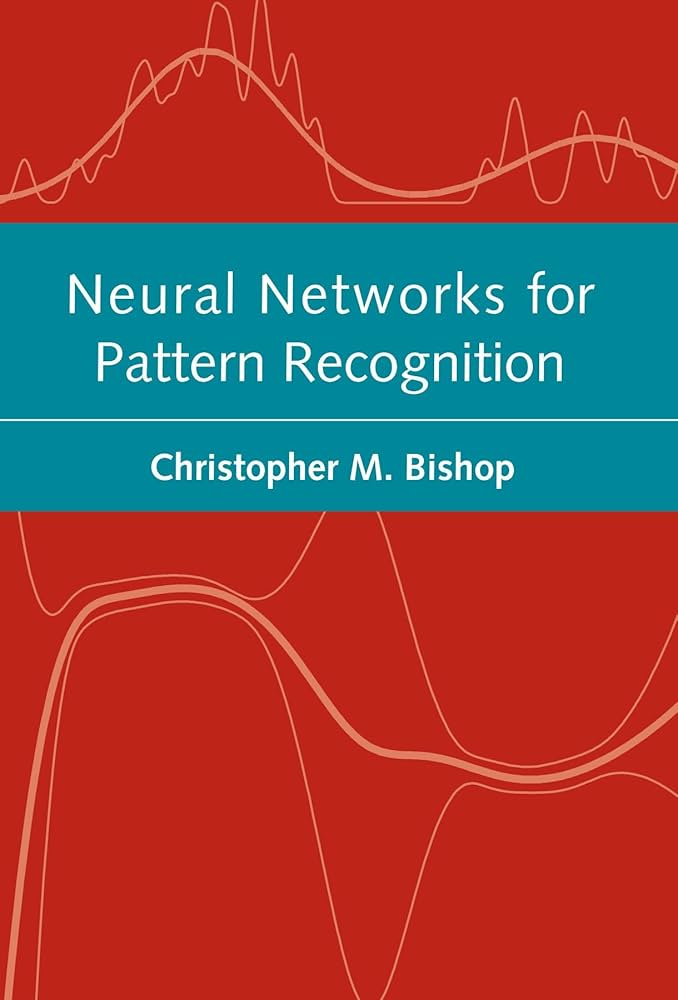
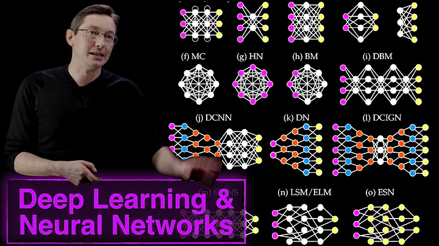
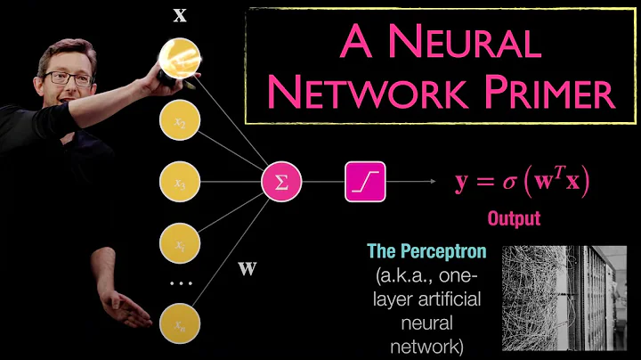
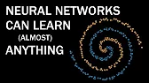
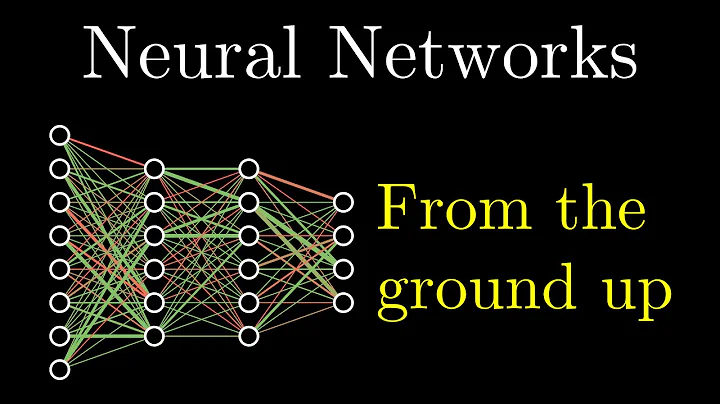

Βιβλία για Νευρωνικά Δίκτυα
-
Neural Networks & Machine Learning
Ένας ολοκληρωμένος οδηγός για τα τεχνητά νευρωνικά δίκτυα και τη μηχανική μάθηση, που καλύπτει τις τελευταίες εξελίξεις στον τομέα. Περιλαμβάνει διαδικτυακούς αλγορίθμους μάθησης, μεθόδους πυρήνα και μηχανές διανυσμάτων υποστήριξης, θεωρία πληροφοριών και τεχνικές όπως τα φίλτρα Kalman. Παρουσιάζει επίσης τη χρήση νευρωνικών δικτύων ανατροφοδότησης και πειράματα σε υπολογιστή.
Haykin Simon
936 σελίδες
 Περιεχόμενο Βιβλίου Αξιολόγηση: ★★★★☆ (40 αξιολογήσεις)
-
The Math of Neural Networks
Τα σημαντικότερα μοντέλα νευρωνικών δικτύων, ξεκινώντας από το απλό μοντέλο Perceptron του ενός νευρώνα και συνεχίζοντας με τα δίκτυα Perceptron πολλών στρωμάτων και τον αλγόριθμο εκπαίδευσης Back Propagation, τα δίκτυα Radial Basis Function (RBF), τα αυτο-οργανούμενα δίκτυα, όπως το μοντέλο SOM, τα γραμμικά και μη-γραμμικά Χεμπιανά μοντέλα μάθησης.
Michael Taylor
167 σελίδες
 Περιεχόμενο Βιβλίου Αξιολόγηση: ★★★★☆ (222 αξιολογήσεις)
-
Neural Networks for Pattern Recognition
Tο βιβλίο εξετάζει τεχνικές για τη μοντελοποίηση συναρτήσεων πυκνότητας πιθανότητας, καθώς και τις ιδιότητες και τα πλεονεκτήματα των μοντέλων των πολυεπίπεδων perceptron και των δικτύων συναρτήσεων ακτινικής βάσης. Καλύπτονται επίσης διάφορες μορφές συναρτήσεων σφάλματος, οι κυριότεροι αλγόριθμοι για την ελαχιστοποίηση των συναρτήσεων σφάλματος, η μάθηση και η γενίκευση στα νευρωνικά δίκτυα, καθώς και οι τεχνικές Bayes και οι εφαρμογές τους.
Christopher M. Bishop
502 σελίδες
 Περιεχόμενο Βιβλίου Αξιολόγηση: ★★★★☆ (54 αξιολογήσεις)
Βιντεοσκοπημένες διαλέξεις για Νευρωνικά Δίκτυα
-
Neural Network Architectures & Deep Learning
This video describes the variety of neural network architectures available to solve various problems in science ad engineering. Examples include convolutional neural networks (CNNs), recurrent neural networks (RNNs), and autoencoders.
Steve Brunton
Διάρκεια: 9 λεπτά
 Περιεχόμενο Βιντεοδιάλεξης Αξιολόγηση: ★★★★★ (27.406 αξιολογήσεις)
-
A Neural Network Primer
This video provides a primer on neural networks for machine learning and artificial intelligence. Neural networks are biologically inspired and provide the backbone of many modern ML/AI frameworks.
Steve Brunton
Διάρκεια: 19 λεπτά
 Περιεχόμενο Βιντεοδιάλεξης Αξιολόγηση: ★★★★★ (1.397 αξιολογήσεις)
-
Why Neural Networks can learn (almost) anything
In this enlightening video, we delve into the fascinating world of neural networks and explore their remarkable ability to learn a wide array of tasks. From image recognition to natural language processing, neural networks have demonstrated an unparalleled capacity for adaptation and learning.
Emergent Garden
Διάρκεια: 10 λεπτά
 Περιεχόμενο Βιντεοδιάλεξης Αξιολόγηση: ★★★★★ (50.902 αξιολογήσεις)
-
But what is a neural network? | Deep learning chapter 1
An introduction to neural networks, explaining the basic principles of their operation. Giving a simple and understandable way how artificial neural networks try to mimic the human brain through layers of artificial neurons. In addition, explain the computation and learning process and how they are used to solve problems such as image recognition or data prediction.
3Blue1Brown
Διάρκεια: 18 λεπτά
 Περιεχόμενο Βιντεοδιάλεξης Αξιολόγηση: ★★★★★ (438.114 αξιολογήσεις)